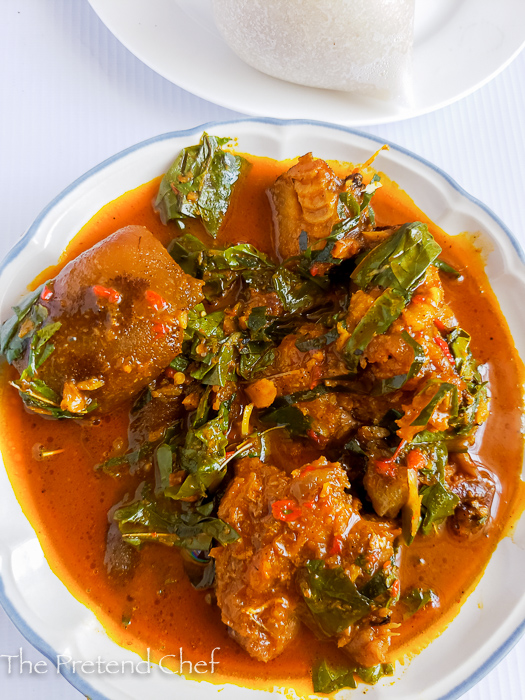

Akparata Soup

How to make Akparata Soup
Ingredients
- Beef
- Dryfish
- Stockfish
- Cameroun Pepper, ground (optional)
- Scotch Bonnet, ground (fresh pepper)
- 6 cups stock and water
- 1 teaspoon uziza seed, ground (optional)
- 6 Tablespoons ground crayfish
- 1/2 cup Palm oil
- 2 Tablespoons ground Akparata
- 8-10 leaves Uziza leaves
- 3 seasoning cubes
- salt
- 1 small bunch Ora leaves
Steps
- Wash meat and stockfish, place in a medium-sized pot. Season meat and stockfish with salt and seasoning cubes.
Add water and cook over medium-high heat until tender.
- Place dry fish in boiling hot water for 1 minute, drain and rinse well in cold water, remove bones.
- Add dry fish, Cameroun pepper, fresh pepper and ground uziza seed. Cook for 5 minutes.
- Meanwhile, place akparata in a small bowl, pour in palm oil and mix very well to have a smooth paste.
- Pour akparata mixture into the boiling meat and stir. Cover pot, reduce heat to medium and cook for 3 minutes.
- Add crayfish and uziza leaves to boiling meat. Stir and taste, add salt.
- Cook for 5 minutes.
- Add Ora leaves, cook for 2 minutes and take off the heat.
- Serve with a swallow of choice.
Home